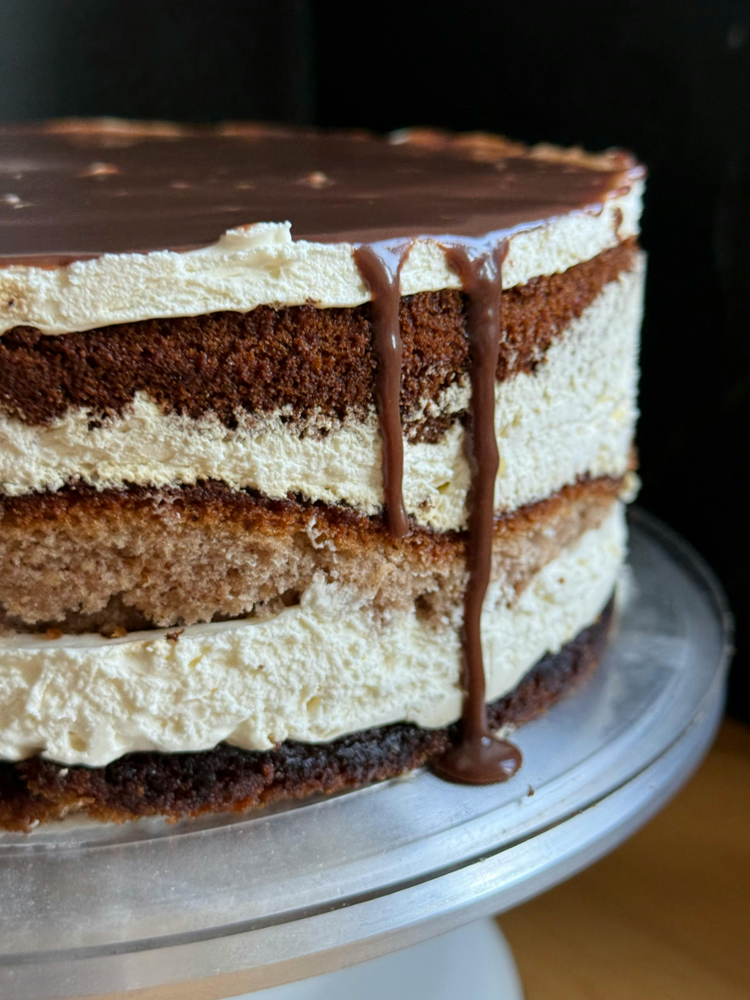

Opera Cake

Recipe Description
Opera cake is a classic French dessert made with thin layers of Joconde sponge cake, coffee syrup, coffee buttercream, chocolate ganache, and chocolate icing.
This recipe is inspired by the traditional Opera cake, a refined dessert known for its neat layers and balanced coffee and chocolate flavors.
I like this recipe because it feels elegant and professional while still being built from simple pastry components.
It is a rich and polished dessert, making it a great choice for celebrations, dinner parties, or a more advanced baking project.
Recipe Ingredients
All ingredients for this recipe are listed below:
For the cake components
- 2 Joconde biscuit sheets, 33.5cm x 33.5cm
- 600g coffee-flavored buttercream
- 400g chocolate ganache
For coating the biscuit
- 200g dark chocolate couverture
For the coffee syrup
- 200ml sugar syrup
- Coffee extract to taste
- Grand Marnier or Cointreau to taste, optional
For the chocolate icing
- 200g dark chocolate couverture
- 30g grapeseed oil
For the finish
- Edible gold leaf, optional
Instructions
For preparing the cake layers
- Prepare the Joconde biscuit sheets, coffee buttercream, chocolate ganache, and coffee syrup before assembling the cake.
- Once the Joconde biscuit sheets are cold, remove them gently from the baking mat or tray.
- Using a 20cm square cake ring as a guide, cut out three square pieces of Joconde biscuit.
- If needed, one of the biscuit layers can be made from two smaller pieces joined together.
- Melt 200g of dark chocolate couverture in short intervals, stirring often so the chocolate does not burn.
- Brush a very thin layer of melted chocolate over one biscuit square.
- Refrigerate the chocolate-coated biscuit for about 10 minutes, or until the chocolate has set.
For assembling the opera cake
- Place the chocolate-coated biscuit inside the square cake ring, with the chocolate-coated side facing down.
- Brush the top of the biscuit with coffee syrup.
- Spread a thin layer of coffee buttercream over the biscuit, about 3-4mm thick.
- Brush one side of the second biscuit layer with coffee syrup.
- Place the second biscuit layer over the buttercream, with the soaked side facing down.
- Brush the top side of the second biscuit layer with more coffee syrup.
- Spread a thin, even layer of chocolate ganache over the second biscuit layer.
- Brush one side of the third biscuit layer with coffee syrup.
- Place the third biscuit layer over the ganache, with the soaked side facing down.
- Brush the top of the third biscuit layer with the remaining coffee syrup.
- Spread another thin layer of coffee buttercream over the top and smooth the surface with a spatula.
- Cover the cake with plastic wrap directly touching the surface of the buttercream.
- Refrigerate the cake for at least 2 hours before glazing.
For the chocolate icing and finish
- Melt 200g of dark chocolate couverture over a bain-marie.
- Once the chocolate is fully melted, stir in the grapeseed oil until smooth.
- Remove the chilled cake from the refrigerator and gently remove the plastic wrap.
- Pour the chocolate icing over the cold buttercream surface.
- Smooth the icing quickly with a large spatula to create an even, thin layer.
- Let the icing set for about 10 minutes in the refrigerator.
- Gently remove the cake from the square ring.
- Dip a sharp knife in hot water, wipe it dry, and trim the edges of the cake for a clean finish.
- Decorate the top with a small piece of edible gold leaf, if using.
- Slice carefully and serve chilled. Enjoy!
Notes
- The cake can be assembled the day before and glazed on the day it will be served.
- For cleaner layers, avoid spreading buttercream or ganache onto the sides of the cake ring.
- The chocolate coating on the bottom biscuit helps protect the sponge from moisture.
- If you do not want to use alcohol, leave out the Grand Marnier or Cointreau from the coffee syrup.
- For neat slices, warm the knife in hot water and wipe it clean between cuts.
Nutrition
Calories: Not provided | Carbohydrates: Not provided | Protein: Not provided | Fat: Not provided | Saturated Fat: Not provided | Cholesterol: Not provided | Sodium: Not provided | Potassium: Not provided | Fiber: Not provided | Sugar: Not provided | Iron: Not provided